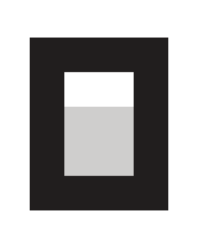
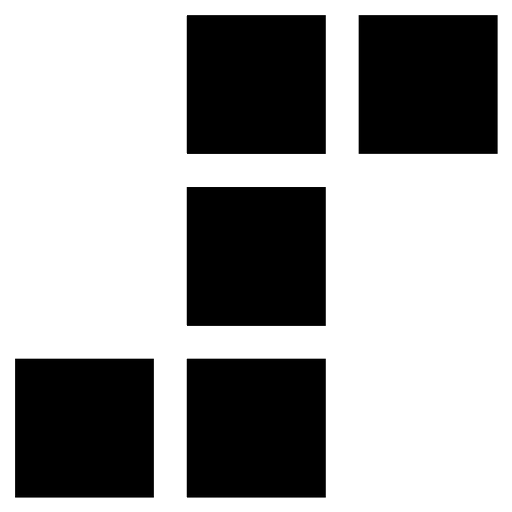

九家 AI 服务统一监控，配额与余额自动归一，随时可加新源。
每个源独立状态栏项，进度条、余额、徽章三种形态，逐源开关，深浅外观自动适配。
全局间隔 30s–5m，每源可加 ×1–×10 倍率；限流端点自动节流。
进度条叠加 7 天预测线，配额将满前提前预警。
进度条下方三角标记当前时间进度，消耗是否过快一眼可见。
密钥与配置只存本机，不上传服务器；纯菜单栏运行，空闲内存约 20MB。
设置里拖动卡片即可排序，详情区块一键折叠。




如果 Zenmonitor 帮到了你，可以请作者喝杯蜜雪冰城，支撑这个开源项目持续维护